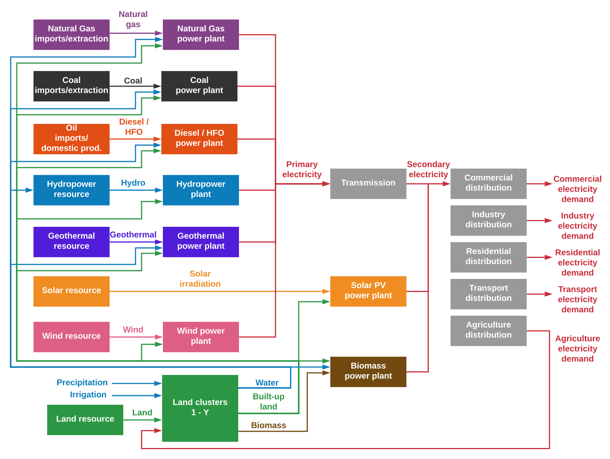
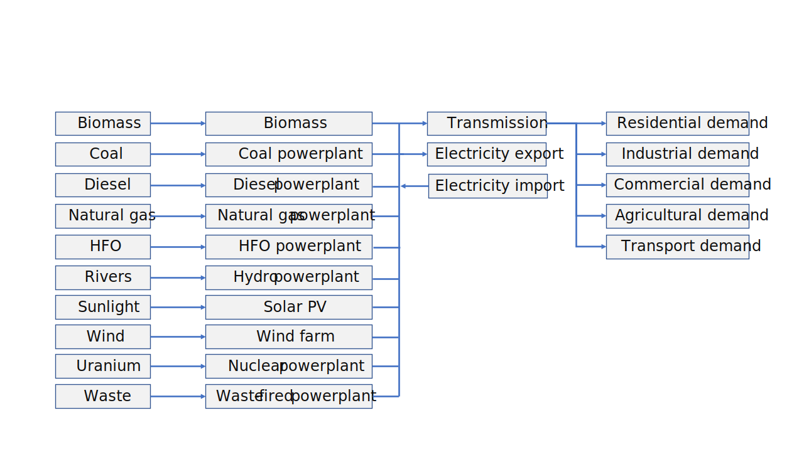
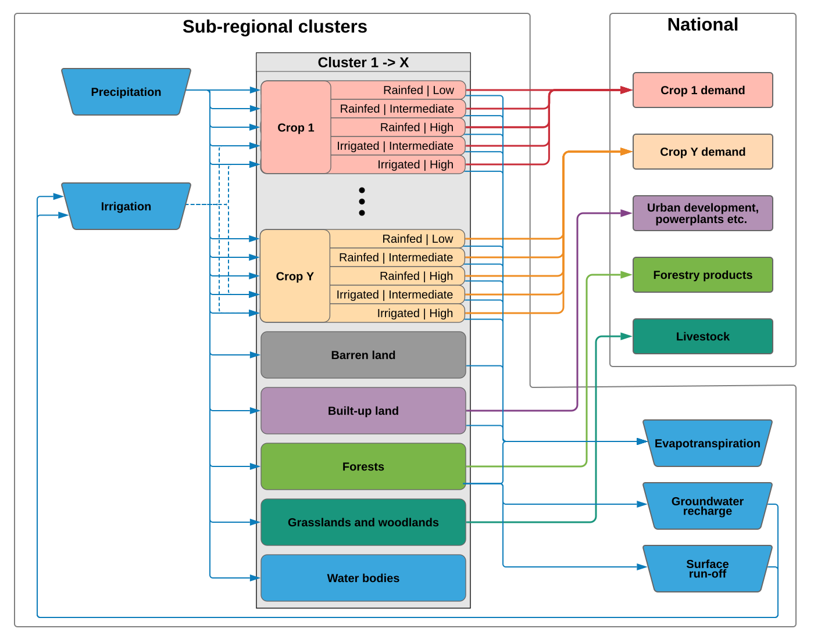
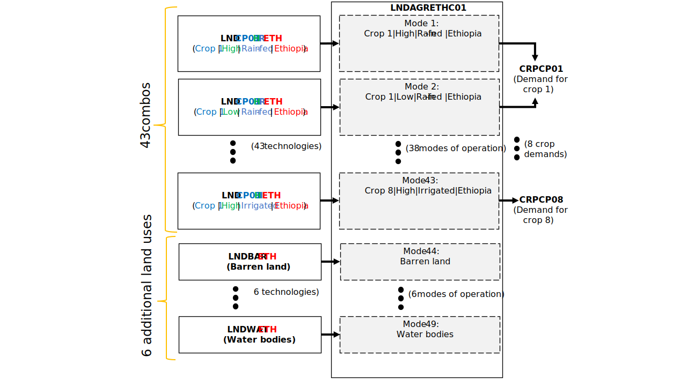

Model structure¶
This section details the structure of the integrated CLEWS-Ethiopia model. It is divided into 3 sub-sections: energy, land-use, and water. Each sub-section provides a snapshot of the underlying representation of the relevant sector in the CLEWS model.
Below is a snapshot of the overall integrated structure of the model
Energy¶
The energy sector is represented by a set of input fuels (e.g. biomass, natural gas), transformation technologies (e.g. powerplants, electricity transmission), and sectoral demands (e.g. diesel in the agricultural sector, electricity in the industry sector). Below is a simplified schematic of the power sector representation in the model.
Land-use¶
The land-use sector is represented as land allocated to 7 different uses/land cover types:
Agriculture, Barren land, Forests, Grassland & Woodland, Built-up land, Water bodies, and other land
Below is a schematic of the land-use sector representation in the CLEWS model.
Agriculture¶
43 technologies represent different crop combinations per region (e.g. LNDCP01NHR)
43 modes of operation (1 for each crop combination)
8 crop demands (at the national level)
Other land uses¶
6 additional technologies that represent other land uses: * Barren land * Forests * Grasslands & woodland * Built-up land * Water bodies * Other land
